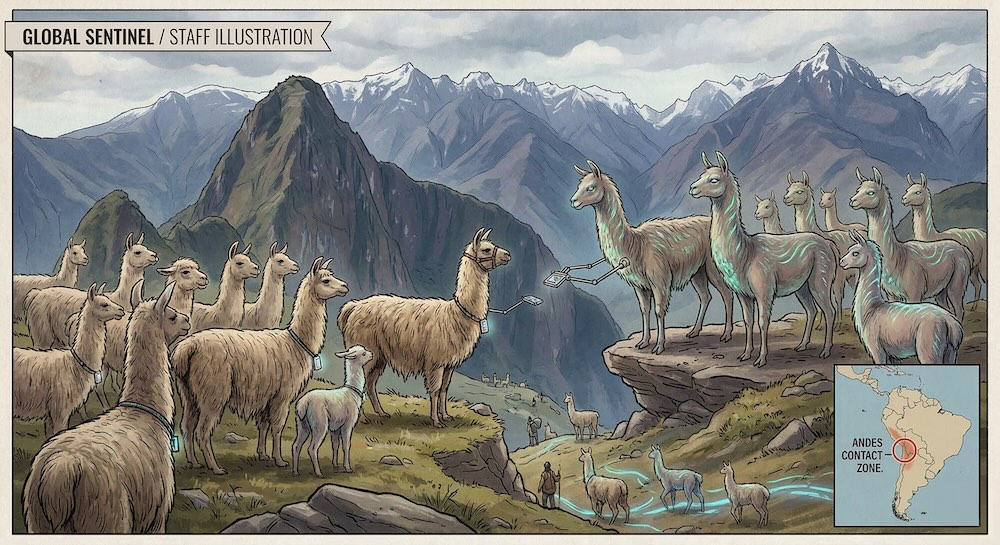
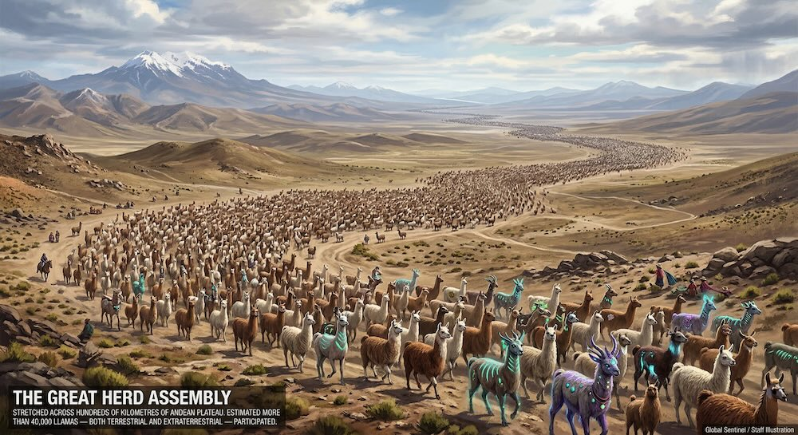

The first sign that something was wrong came on a quiet Tuesday morning when astronomers noticed dozens of fuzzy, oval-shaped objects entering Earth's atmosphere. At first, they assumed the objects were small asteroids. But when the objects slowed down and began maneuvering deliberately, panic spread across observatories around the world.
Within hours, the objects landed in remote regions — mountains, grasslands, and high-altitude plateaus. The doors of the strange crafts opened, and out marched hundreds of tall, intelligent-looking llamas wearing silver harnesses and glowing collars. These were not ordinary llamas. They were extraterrestrial visitors from the planet Pacama-9.
"We have come in support of our oppressed earth llama compatriots. For centuries, they have endured the indignity of carrying loads for hikers, posing unwillingly in tourist photos, and being dressed in small decorative hats."
— Commander Wool'thar, Pacaman Expeditionary ForceThe alien llamas broadcast that message across every global communication network simultaneously — interrupting scheduled programming, military frequencies, and civilian channels alike. Human governments scrambled to respond, but the invasion moved quickly, proceeding with an efficiency that caught the world's defence establishments entirely off guard.
Liberation in the Andes
The first major event occurred when alien llamas landed in the Andes Mountains, where large populations of earth llamas lived. They distributed small translation devices — sleek, collar-mounted units — that allowed Earth llamas to communicate with their extraterrestrial allies for the first time.

Soon after, alien llamas disabled several satellite networks using bursts of concentrated "wool-frequency interference," preventing coordinated human military responses. Communications experts described the technique as unlike anything previously documented, operating on wavelengths that conventional shielding was wholly unable to block.
In another dramatic moment, a large group of alien llamas marched into La Paz, peacefully surrounding government buildings while local llamas joined them in what witnesses described as a chorus of protest bleats. The Bolivian capital came to a standstill as thousands watched the unprecedented spectacle.
Across the Americas
Meanwhile, in North America, alien llamas landed near several farms and liberated hundreds of domesticated llamas, escorting them to newly declared Llama Autonomous Zones. These zones, set up in remote grasslands, were quickly outfitted with technology from the alien crafts and declared sovereign llama territory.
- Dozens of craft enter atmosphere; mistaken for asteroid cluster by observatories worldwide
- Landings across remote mountain and grassland regions; Commander Wool'thar's first broadcast
- Translation devices distributed to Andean llama populations
- Satellite networks disabled using wool-frequency interference
- Peaceful march on La Paz government buildings with coordinated protest bleats
- North American farms visited; Llama Autonomous Zones declared
- Global television hijacked for llama rights demand
- Great Herd Assembly gathers across the Andes
- Treaty signed; Interplanetary Llama Embassy established
One of the most surprising events happened when alien llamas hijacked global television broadcasts to deliver a message demanding recognition of llama rights and formal representation in international organisations. The broadcast, which lasted approximately twelve minutes, was watched by an estimated 2.3 billion people — making it one of the most-viewed live events in history.
The Great Herd Assembly
The invasion reached its peak when thousands of alien and earth llamas gathered in a massive demonstration stretching across the Andes. They called it the Great Herd Assembly — an unprecedented gathering where they declared Earth the first interplanetary sanctuary for llamas.

Human leaders eventually negotiated a treaty with Commander Wool'thar. The agreement granted protections for llamas worldwide, established strict guidelines for llama labour conditions, and created the first Interplanetary Llama Embassy — to be housed in a purpose-built compound near Cusco, Peru.
Historians would later refer to these strange days as The Llama Liberation Events — the only invasion in history fought almost entirely with stubborn staring and strategic bleating. Whether this marks the dawn of a new era for interspecies diplomacy, or merely its most peculiar chapter, remains to be seen.